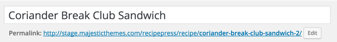
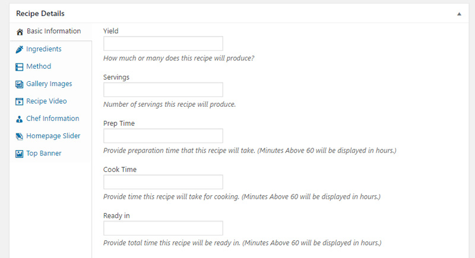
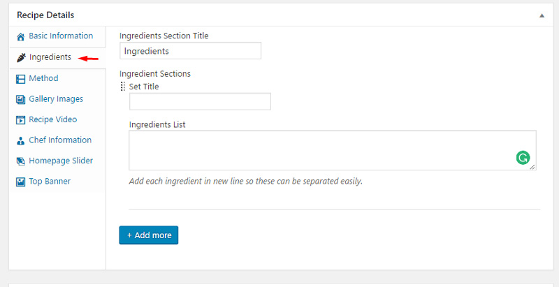
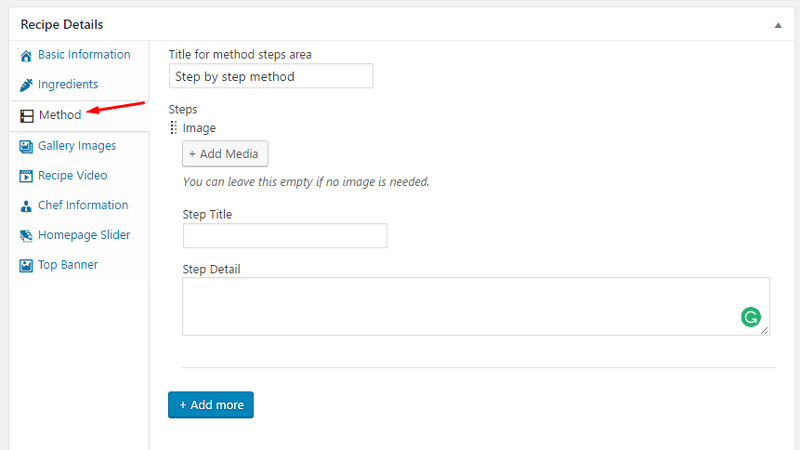
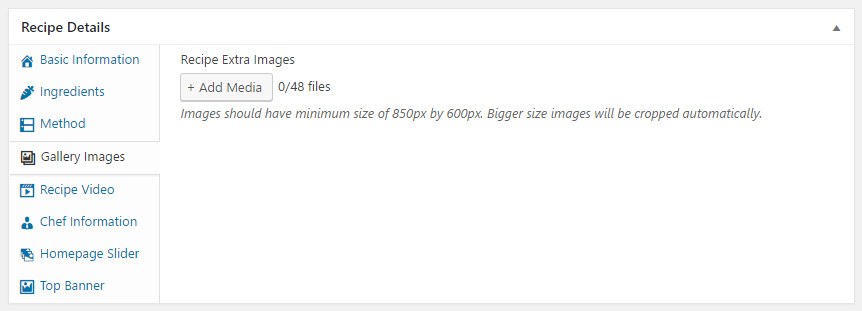
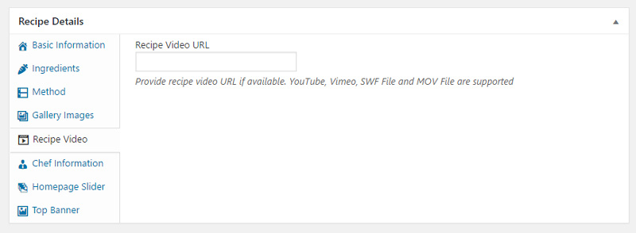
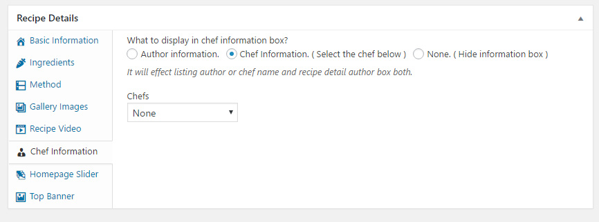
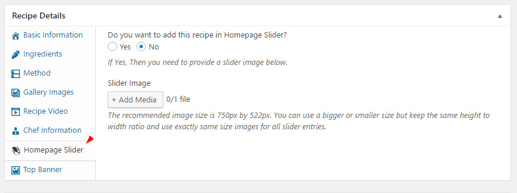
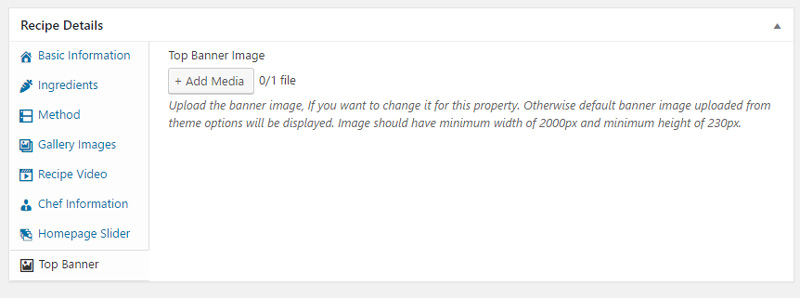

Adding a Recipe
Go to WordPress Admin > Recipes > Add New
1 - Provide the recipe title

2 - Provide recipe description

3 - Provide featured image. Featured image should have minimum width of 848px and minimum height of 435px. Height is more flexible but you have to put all images with same height. Images bigger in size will be cropped automatically.

Recipe Meta Information
For each recipe you have to add some meta information. Almost all the options are self explanatory.
Basic Recipe Information
In this section you have to provide information like yeild, serving, time recipe will take etc. Nutrients information is also available for this section as option. You can also provide extra tips and variations or any other information of special note kind of tips and variation section.

Recipe Ingredients
In this section you have to provide recipe ingredients.

Recipe Methods
In this section you have to provide recipe method steps.

Gallery Images
You can provide extra images for recipe to work as gallery in single display.

Recipe Video
You can provide a video link so Watch Video button will appear on single recipe page.

Recipe Chef
You can handle chef related options in this section.

Home Page Slider
You can provide an image for a recipe and enable it to be displayed in home page slider. Make sure you are providing images of same size as mentioned.

Note: Changing slider type from theme options will also effect this setting and you have to upload related image sizes.
Recipe Banner
You can provide a banner image of mentioned size so there will be a different banner for this recipe.

5 - Press publish button once you are done.